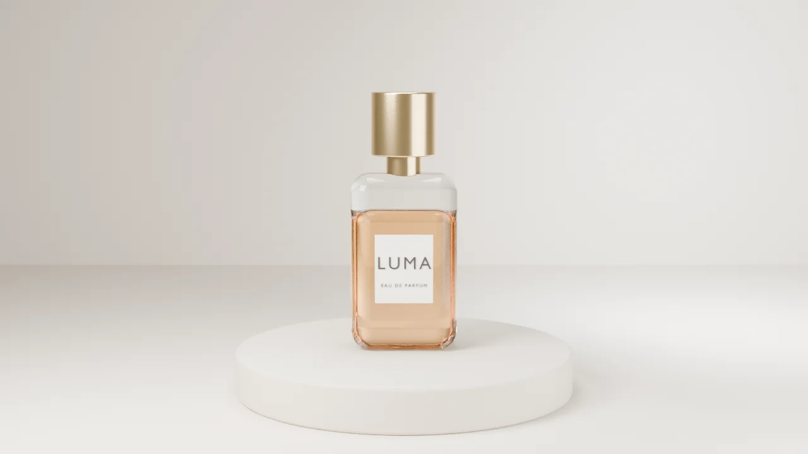
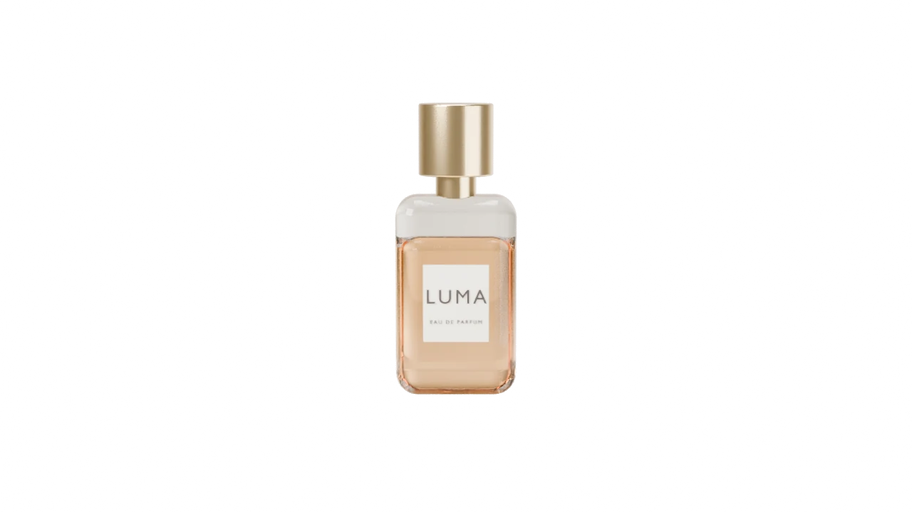

הירו של בושם. סרטון קצר מתנגן פעם אחת: הבקבוק נופל ונוחת על בסיס אבן. ברגע שהוא נעצר, שם המותג עולה בענק מאחוריו, והבקבוק נשאר מלפנים, כאילו הוא חלק מהמילה. זה נראה כמו עריכה של סרטון פרסומת, אבל זה רק סרטון, מילה ותמונה אחת בדיוק במקום.
מתי משתמשים: השקת מוצר, קולקציה חדשה או מותג עם שם קצר וחזק (2 עד 6 אותיות), כשיש סרטון מוצר שמסתיים בצילום נקי. מתי לא: סרטון שמסתיים בתנועה או בטקסט משלו, שם מותג ארוך (המילה צריכה להיות ענקית), או עמוד שבו הסרטון צריך לחזור בלולאה.
הדמו כאן עיצובי-ניטרלי בכוונה. כשהמהלך נכנס לפרויקט, מיובאת רק ההתנהגות: הצבעים, הרדיוסים, הפונטים והצללים יורשים את העיצוב של אותו פרויקט.


ענבר, ורד שחור ועץ ארז. נשלח בקופסת מתנה, עם דוגמית של 5 מ"ל לנסות לפני שפותחים.
object-fit:cover, ולכן החיתוך יושב על הסרטון בדיוק בפיקסל. החיתוך לא נעשה ביד: בלנדר מרנדר את הפריים האחרון פעם נוספת כמסכה (הבקבוק לבן, כל השאר שחור), ו-ffmpeg מצרף אותה כשקיפות (alphamerge). התזמון: הסרטון מתחיל כשחצי ממנו במסך; באירוע ended הוא נשאר על הפריים האחרון, החיתוך מופיע מיד, והמילה עולה מלמטה ב-0.9 שנייה. כפתור «לצפות שוב» מחזיר להתחלה. בלי JS ובהפחתת תנועה: המצב הסופי מוצג מההתחלה (פריים אחרון, מילה וחיתוך), בלי הסרטון. בטלפון הקופסה בגובה 4:5 והמילה מוקטנת, והבקבוק עדיין מכסה את אמצעה. אסור: לנחש מיקום של חיתוך ידני מעל סרטון, או לשים את המילה כטקסט על הסרטון בלי החיתוך (אז היא מסתירה את המוצר).הקוד כאן עומד בפני עצמו. כל טוקן עיצוב נושא ברירת מחדל, מחלקות העזר של המאגר מוטמעות בו, ותגי הסקריפט מסודרים לפי הסדר הנכון. פרויקט שמגדיר --accent או --line משלו יורש אותם אוטומטית. הרכיב הזה מסתמך על dir="rtl".
/* מחלקות עזר של המאגר שהרכיב הזה משתמש בהן */
.stage{padding:var(--sec, clamp(120px, 12vw, 260px)) var(--gutter, clamp(24px, 5vw, 96px));position:relative}
.stage.tight{padding-block:clamp(48px,5vw,90px)}
.stage.full{padding-inline:0}
/* H37 · סרטון שנעצר, והמוצר יוצא מתוך המילה */
.lw{position:relative;display:grid;gap:clamp(20px,3vw,32px);padding:clamp(16px,2vw,24px);border-radius:clamp(20px,2.4vw,32px);background:var(--bg, #f7f7fa);color:var(--ink, #16182b)}
.lw-box{position:relative;aspect-ratio:16/9;max-height:84vh;border-radius:clamp(16px,2vw,28px);overflow:hidden;isolation:isolate;background:#d7cbbd}
.lw-box>video,.lw-box>img{position:absolute;inset:0;width:100%;height:100%;object-fit:cover}
.lw-v{z-index:0}
.lw-last{z-index:0}
.lw-wm{position:absolute;inset-inline:0;inset-block-start:4%;z-index:1;margin:0;text-align:center;font-size:clamp(90px,24vw,360px);font-weight:900;line-height:.82;letter-spacing:-.02em;color:#2b1d12;direction:ltr;pointer-events:none}
.lw-cut{z-index:2;pointer-events:none}
.lw.is-live .lw-last{display:none}
.lw.is-live .lw-cut{opacity:0}
.lw.is-live .lw-wm{opacity:0;transform:translateY(18%)}
.lw.is-live.is-done .lw-cut{opacity:1}
.lw.is-live.is-done .lw-wm{opacity:1;transform:none;transition:opacity .5s cubic-bezier(.2,.6,.2,1),transform .9s cubic-bezier(.2,.6,.2,1)}
.lw-ft{display:flex;flex-wrap:wrap;align-items:end;justify-content:space-between;gap:16px 32px;padding-inline:clamp(4px,1vw,12px)}
.lw-ft h1{margin:0;font-size:clamp(30px,3.4vw,48px);font-weight:800;line-height:1.1;letter-spacing:-.01em;text-wrap:balance;max-width:22ch}
.lw-ft p{margin:6px 0 0;color:var(--muted, #6a6d85);font-size:var(--fs-body, clamp(17px, 0.6vw + 0.7rem, 22px));line-height:1.6;max-width:40ch}
.lw-act{display:flex;gap:12px;align-items:center}
.lw-cta{display:inline-flex;align-items:center;min-height:48px;padding:12px 24px;border-radius:999px;background:var(--ink, #16182b);color:var(--bg, #f7f7fa);font-weight:700;text-decoration:none}
.lw-re{min-height:44px;padding:8px 18px;border:0;border-radius:999px;background:color-mix(in srgb,var(--ink, #16182b) 7%,transparent);color:var(--ink, #16182b);font:inherit;font-size:14px;font-weight:600;cursor:pointer}
.lw-re[hidden]{display:none}
.lw-cta:focus-visible,.lw-re:focus-visible{outline:2px solid var(--accent, #4a3aff);outline-offset:3px}
@media(max-width:700px){.lw-box{aspect-ratio:4/5}.lw-wm{inset-block-start:16%;font-size:31vw}}<div class="stage"><section class="lw" data-lw>
<div class="lw-box">
<img class="lw-last" src="https://liavwebdesign-spec.github.io/motion-vault/assets/media/luma/land-last.webp" width="1280" height="720" alt="" decoding="async">
<video class="lw-v" muted playsinline preload="none" poster="https://liavwebdesign-spec.github.io/motion-vault/assets/media/luma/land-first.webp" aria-hidden="true"></video>
<p class="lw-wm" aria-hidden="true">LUMA</p>
<img class="lw-cut" src="https://liavwebdesign-spec.github.io/motion-vault/assets/media/luma/land-cut.webp" width="1280" height="720" alt="בקבוק הבושם LUMA עומד על בסיס אבן עגול" decoding="async">
</div>
<div class="lw-ft">
<div><h1>LUMA. הבושם החדש שלנו כבר כאן</h1><p>ענבר, ורד שחור ועץ ארז. נשלח בקופסת מתנה, עם דוגמית של 5 מ"ל לנסות לפני שפותחים.</p></div>
<div class="lw-act"><a class="lw-cta" href="#">להזמנה מוקדמת</a><button class="lw-re" type="button" hidden>לצפות שוב</button></div>
</div>
</section></div>(function(){
const root=document.querySelector("[data-lw]");
if(!root||matchMedia("(prefers-reduced-motion: reduce)").matches)return; // המצב הסופי נשאר
const v=root.querySelector(".lw-v"),re=root.querySelector(".lw-re");
root.classList.add("is-live");
let started=false;
function play(){
root.classList.remove("is-done");re.hidden=true;
v.currentTime=0;
const p=v.play();
if(p&&p.catch)p.catch(()=>{root.classList.remove("is-live");}); // דפדפן שחוסם ניגון: המצב הסופי הסטטי
}
v.addEventListener("ended",()=>{root.classList.add("is-done");re.hidden=false;});
re.addEventListener("click",play);
new IntersectionObserver(([en])=>{
if(en.isIntersecting&&!started){started=true;v.src="https://liavwebdesign-spec.github.io/motion-vault/assets/media/luma/land.mp4";play();}
},{threshold:.5}).observe(root.querySelector(".lw-box"));
})();